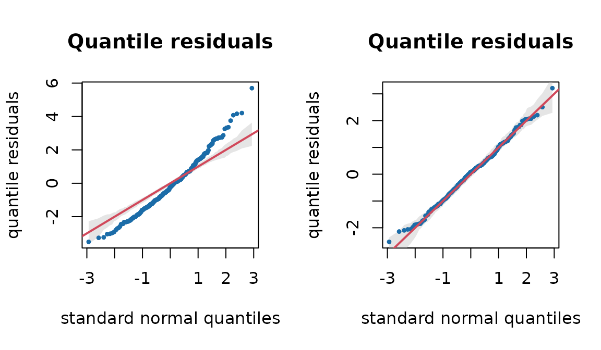
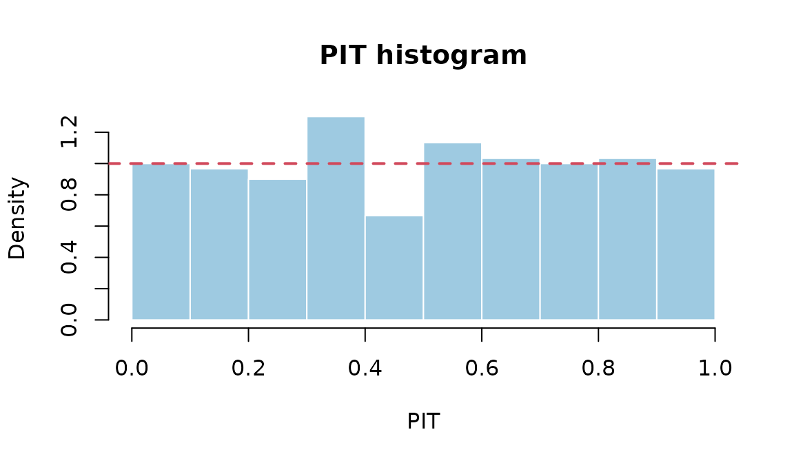

library(regcompR)
n <- 300
d <- data.frame(x = rnorm(n))
d$y <- rnbinom(n, mu = exp(1 + 0.5 * d$x), size = 2)
fp <- regcomp(y ~ x, family = "poisson", data = d)
fnb <- regcomp(y ~ x, family = "nb2", data = d)Residuals
Randomized quantile residuals (Dunn and Smyth 1996) are standard normal under a correct model for discrete and continuous responses alike.


Scoring rules and cross validation
scoring_rule() gives the pointwise log score, CRPS,
Dawid Sebastiani, Brier or ranked probability score;
cv_regcomp() gives K fold cross validated scores (with
grouped folds for clustered data).
c(poisson = mean(scoring_rule(fp, rule = "crps")), nb2 = mean(scoring_rule(fnb, rule = "crps")))
#> poisson nb2
#> 1.410868 1.351101
cv <- cv_regcomp(fnb, K = 5, rule = "log")
c(estimate = cv$estimate, se = cv$se)
#> estimate se
#> 2.09403405 0.05254169
compare_models(poisson = fp, nb2 = fnb)
#> model family logLik df AIC BIC
#> 1 nb2 negative_binomial_nb2 -626.5230 3 1259.046 1270.157
#> 2 poisson poisson -704.1451 2 1412.290 1419.698Identifiability and robust standard errors
identifiability_check(fnb)
#> $condition_number
#> [1] 8.593197
#>
#> $weak_directions
#> list()
#>
#> $boundary_variances
#> NULL
#>
#> $notes
#> character(0)
sqrt(diag(vcov(fp, type = "sandwich")))
#> lambda:(Intercept) lambda:x
#> 0.05912529 0.05575825